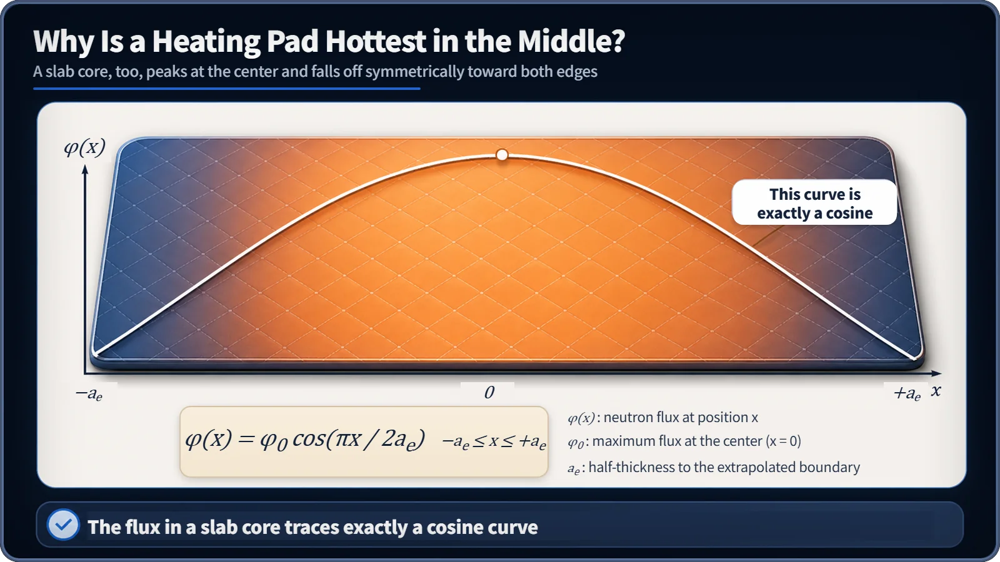
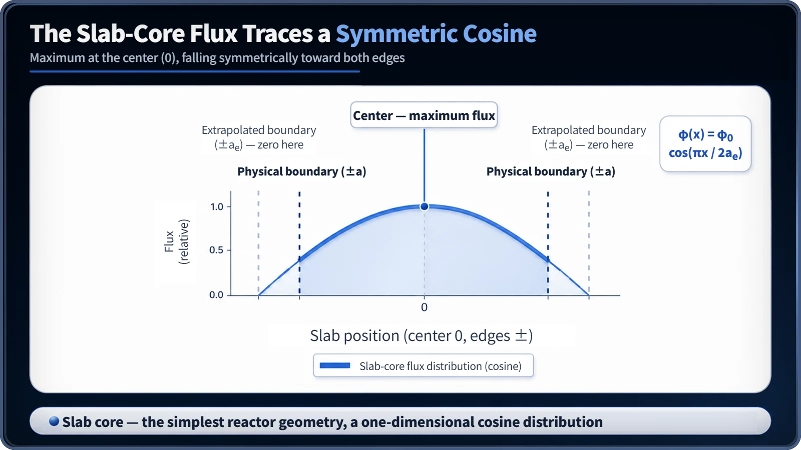

Neutron Physics & the Core · 094
Why Is a Heating Pad Warmest in the Middle? — The Cosine Flux Curve of a Slab Reactor
The simplest core shape gives the simplest flux curve: a symmetric cosine whose center runs about 57% above average.
In an idealized flat (slab) core, the neutron flux follows exactly one curve: φ(x) = φ₀ cos(πx / 2aₑ). It peaks at the center, falls off symmetrically and reaches zero at the extrapolated boundary just beyond the core's edge. For this shape the center runs about 57% above the core average. [1]
Why a heating pad is warmest in the middle
Lie on a heating pad and within minutes the middle, under your back, is toasty while the edge under your feet stays lukewarm. Same pad, same power, yet the temperature depends on where you are. The neutron flux inside the simplest core shape, the flat slab, draws exactly the same picture.
A slab reactor is a model, not a plant
A slab is an idealized core shaped like a plate: finite in thickness and assumed infinite in the other two directions. Real power-reactor cores are closer to cylinders, but the slab reduces the problem to one axis, simple enough to solve the diffusion equation by hand. That is why reactor physics always starts here before moving on to cylinders and spheres.
Exactly a cosine
The flux across the slab is
φ(x) = φ₀ cos(πx / 2aₑ), for −aₑ ≤ x ≤ +aₑ
where φ₀ is the maximum flux at the center (x = 0) and aₑ is the half-thickness to the extrapolated boundary, an imaginary edge slightly beyond the physical one where the flux reaches zero in theory. The curve is perfectly symmetric, flattest at the center and exactly zero at ±aₑ. [1]

Why it has to be a cosine
The slab flux satisfies d²φ/dx² + B²φ = 0, whose solutions are combinations of sines and cosines. Symmetry demands that the flux be maximum and flat at the center. A sine is zero at the center with a nonzero slope, so it fails; only the cosine fits. The constant π/(2aₑ) is the B of the buckling (the buckling itself is B²): a bigger core gives a smaller B and a gentler curve, a smaller core a sharper one. [2]

A practical number: the peaking factor
For an ideal slab with this cosine shape, the ratio of the central maximum to the core-average flux, the peaking factor, is π/2 ≈ 1.57: the center runs about 57% above average. Just as a heating-pad thermostat must be designed around its hottest spot, this is why the center of a core needs a more generous temperature and power margin. Real plants keep their peaking factors below this ideal value with fuel loading patterns, reflectors and control rods. [2]
Three easy mix-ups
"Slab reactors exist." They are an idealized assumption; commercial cores are generally close to cylindrical.
"The cosine is the temperature profile." It is the neutron flux. Heat generation and temperature follow a broadly similar trend, but finding real temperatures needs a separate heat-transfer calculation.
"Slabs, cylinders and spheres are unrelated." All three are solutions of the same diffusion equation in different coordinates; the slab is simply the easiest place to start.
Key takeaways
A slab reactor is the simplest one-dimensional core model. Its flux is the cosine φ(x) = φ₀ cos(πx / 2aₑ), fixed by the requirement that the flux be maximum and flat at the center, and even this idealized curve shows why the core center needs extra margin: it runs about 57% above average.